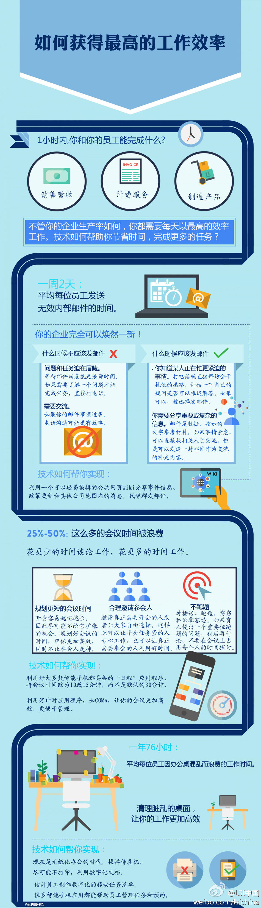

找个时间讨论下？//@ACOUG中国: 高效的内部沟通机制，便捷的电子化工具可以帮助我们提高工作效率。ACOUG现在使用：➊Wordpress+MailChimp+活动行/EventBrite+Weibo组织及发布信息➋借助Tower进行团队沟通➌使用优酷、百度云、Flickr分享资料...后台只有1-2个兼职管理员，@Ada李力 @家常咖啡@LSI中国:#方式方法#【一张图教你如何获得最高的工作效率】每天是否觉得时间不够用？是否觉得做了好多工作，结果徒劳无功，时间都是怎么被浪费的？各位程序猿、工程师和架构师们，一起来看看如何获得最高的工作效率吧！ 